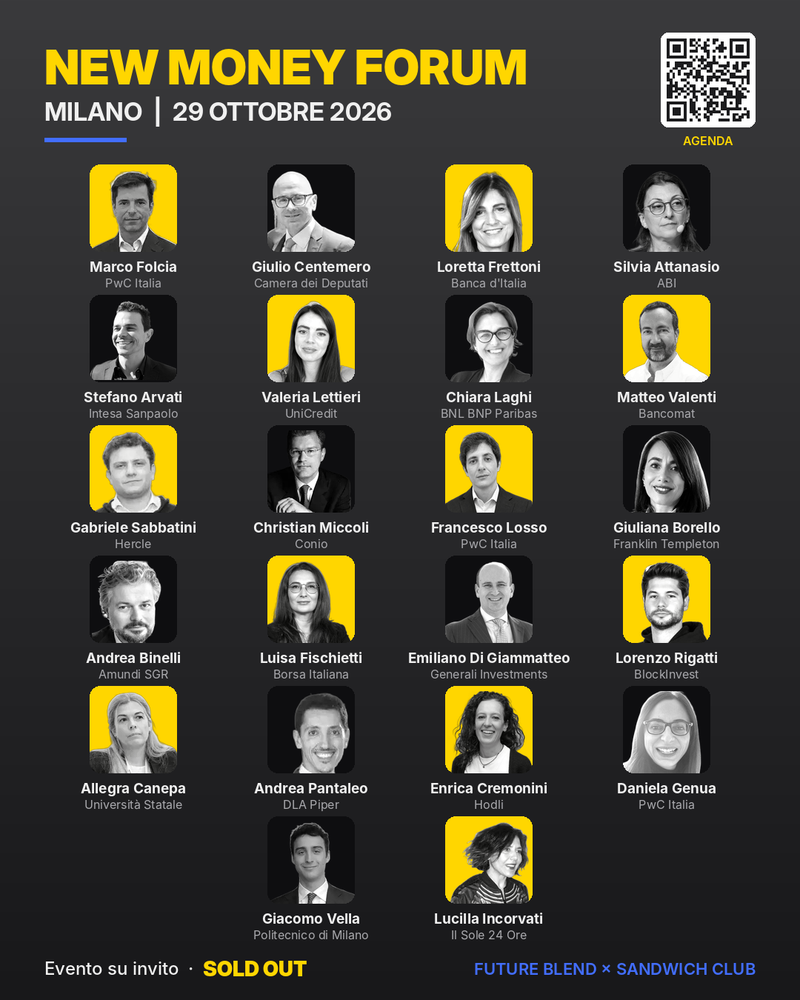
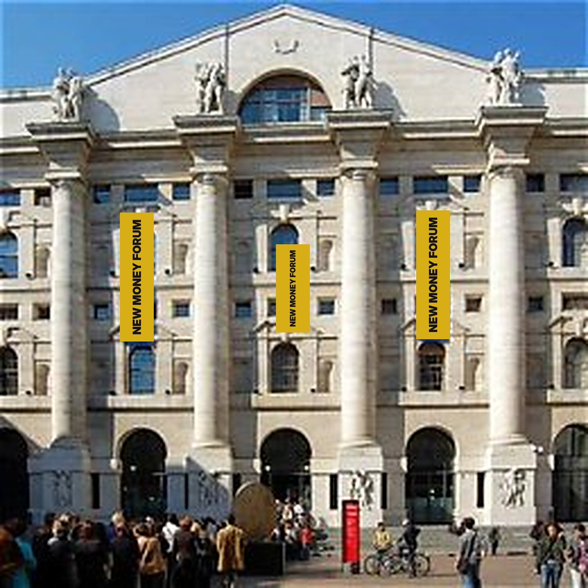
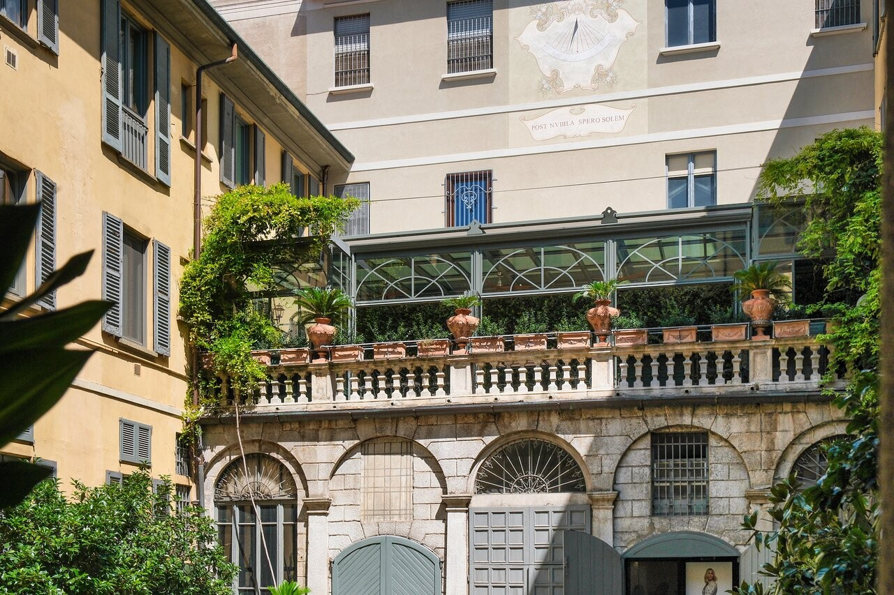

4 FEBRUARY 2026 · ROME
Rome Policy Forum
At the Chamber of Deputies, Sala della Lupa: stablecoins, the digital euro, monetary sovereignty and European financial infrastructure.
AN INDEPENDENT INSTITUTIONAL PLATFORM ON DIGITAL FINANCE
A neutral space where policy, innovation and institutions meet, behind closed doors and under the Chatham House Rule. Events with Sandwich Club, research, policy intelligence.
2026 IN REVIEW

29 OCTOBER 2026 · MILAN
Smart City Lab. 100 invited guests, sold out. 22 speakers across four panels on regulation, stablecoins, institutional capital and tokenised finance, under the Chatham House Rule.
Bank of Italy · ABI · Borsa Italiana · Intesa Sanpaolo · UniCredit · BNL BNP Paribas · Generali Investments · Amundi · Franklin Templeton · Bancomat · Hercle · PwC Italia · Conio · BlockInvest · DLA Piper · Hodli · Politecnico di Milano · University of Milan · Il Sole 24 Ore
THE 2027 PROGRAMME
The digital euro pilot, the first bank-issued euro stablecoins, Pontes in its first full year. Two round tables, one Forum and one research project follow the change as it happens.
MARCH · MILAN
Bagatti Valsecchi Museum. 25–30 guests by invitation.
APRIL · MILAN
Closed doors, one topic, a summary that feeds the Index.
25 OCTOBER · MILAN
Speakers and partners, the evening before the Forum, at Cavoli a Merenda.
26 OCTOBER · MILAN
Palazzo Mezzanotte, home of Borsa Italiana. 250 guests by invitation.


NEW MONEY INDEX · WITH THE SANDWICH CLUB RESEARCH CENTRE
A survey before the events, a report after. It measures how ready banks, fintechs and institutions are for stablecoins, the digital euro and tokenisation, and it is updated every year.
For partners: input into the questions, presence in the report, and the results presented on the Forum stage at Palazzo Mezzanotte.
WHAT WE DO
Closed-door forums and round tables with regulators, policymakers and industry leaders.
Analysis on stablecoins, the digital euro, tokenisation and financial innovation, starting with the New Money Index.
Regulatory updates, MiCAR briefings and interpretation for decision-makers.
Positioning, narrative, stakeholder engagement and regulatory preparedness for fintechs and financial institutions.
Editorial content, the Future Blend Briefing and public positioning.
A curated network of institutions, fintechs and innovators, invited one by one.
PARTNERS
MAIN SPONSORS
Bancomat · Hercle
TECHNICAL SPONSOR
PwC Italia
SUPPORTING PARTNERS
Amundi · Franklin Templeton · Crypto Finance (Deutsche Börse Group)
MEDIA PARTNERS AND PATRONAGE
La Mia Finanza · #Assodigitale · Asset Crypto · Assofintech · AssoCASP
Institutional events are co-organised with Sandwich Club. Partners gain access to regulators, private round tables, shared research and early visibility on what is coming.
PARTNER WITH US
Naming event sponsor, programme partner, Forum main sponsor, round table partner, supporter, institutional dinner. Partners who confirm by 15 December 2026 are the first to choose panels and positioning.
Request the partnership proposalTHE FUTURE BLEND BRIEFING
Read by 6,000 subscribers, inside the European institutions too.
Subscribe on LinkedIn